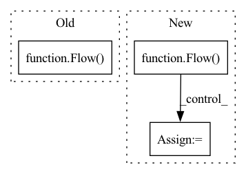

Pattern ID :18302
Before Change
)
@pytest.mark.parametrize("docker_images", [["slow-process-executor"]], indirect=True)
async def test_no_message_lost_during_scaling(logger, docker_images):
flow = Flow(
name="test-flow-slow-process-executor",
infrastructure="K8S",
timeout_ready=120000,
k8s_namespace="test-flow-slow-process-executor-ns",
) .add(
name="slow_process_executor",
uses=docker_images[0],
timeout_ready=360000,After Change
"docker_images", [["slow-process-executor", "jinaai/jina"]], indirect=True
)
async def test_no_message_lost_during_scaling(logger, docker_images, tmpdir):
flow = Flow(name="test-flow-slow-process-executor",) .add(
name="slow_process_executor",
uses=f"docker://{docker_images[0]}",
replicas=3,
)
dump_path = os.path.join(str(tmpdir), "test_flow_k8s")
namespace = "test-flow-slow-process-executor-ns"
flow.to_k8s_yaml(dump_path, k8s_namespace=namespace)
from kubernetes import client
api_client = client.ApiClient()
core_client = client.CoreV1Api(api_client=api_client)
app_client = client.AppsV1Api(api_client=api_client)
await create_all_flow_pods_and_wait_ready(
dump_path,
namespace=namespace,
api_client=api_client,
app_client=app_client,
core_client=core_client,
)
// start port forwarding
gateway_pod_name = (
core_client.list_namespaced_pod(
namespace=namespace, label_selector="app=gateway"
)
.items[0]
.metadata.name
)
config_path = os.environ["KUBECONFIG"]
import portforward
with portforward.forward(
namespace, gateway_pod_name, flow.port_expose, flow.port_expose, config_path
):
// send requests and validate
time.sleep(0.1)
client_kwargs = dict(
host="localhost",
port=flow.port_expose,
)
client_kwargs.update(flow._common_kwargs)
stop_event = multiprocessing.Event()
scale_event = multiprocessing.Event()
received_responses = multiprocessing.Queue()
response_arrival_times = multiprocessing.Queue()
process = multiprocessing.Process(
target=send_requests,
kwargs={In pattern: SUPERPATTERN
Frequency: 3
Non-data size: 3
Instances Fragment ID: 59977138
Project Name: jina-ai/jina
Commit Name: 6e9e7ef32f61cab04c6efc7a9f21659d26b50fdb
Time: 2022-01-10
Author: joan.martinez@jina.ai
File Name: tests/k8s/test_graceful_request_handling.py
M Class Name: AnonimousClass
N Class Name: AnonimousClass
M Method Name: test_no_message_lost_during_scaling(3)
N Method Name: test_no_message_lost_during_scaling(2)
M Parent Class:
N Parent Class:
M File Name: tests/k8s/test_graceful_request_handling.py
N File Name: tests/k8s/test_graceful_request_handling.py
M Start Line: 72
M End Line: 154
N Start Line: 144
N End Line: 242
Before Change
)
@pytest.mark.parametrize("docker_images", [["slow-process-executor"]], indirect=True)
async def test_no_message_lost_during_kill(logger, docker_images):
flow = Flow(
name="test-flow-slow-process-executor",
infrastructure="K8S",
timeout_ready=120000,
k8s_namespace="test-flow-slow-process-executor-ns",
) .add(
name="slow_process_executor",
uses=docker_images[0],
timeout_ready=360000,
replicas=3,
)
with flow:
with kubernetes_tools.get_port_forward_contextmanager(
"test-flow-slow-process-executor", flow.port_expose
):
client_kwargs = dict(
host="localhost",
port=flow.port_expose,
)
client_kwargs.update(flow._common_kwargs)
stop_event = multiprocessing.Event()
scale_event = multiprocessing.Event()
received_resposes = multiprocessing.Queue()
process = multiprocessing.Process(
target=send_requests,
kwargs={
"client_kwargs": client_kwargs,
"stop_event": stop_event,
"scale_event": scale_event,
"received_resposes": received_resposes,
"logger": logger,
},
daemon=True,
)
process.start()
time.sleep(1.0)
// scale slow init executor up
k8s_clients = K8sClients()
logger.debug("Kill 2 replicas")
pods = k8s_clients.core_v1.list_namespaced_pod(After Change
"docker_images", [["slow-process-executor", "jinaai/jina"]], indirect=True
)
async def test_no_message_lost_during_kill(logger, docker_images, tmpdir):
flow = Flow(name="test-flow-slow-process-executor",) .add(
name="slow_process_executor",
uses=f"docker://{docker_images[0]}",
replicas=3, Fragment ID: 59977136
Project Name: jina-ai/jina
Commit Name: 6e9e7ef32f61cab04c6efc7a9f21659d26b50fdb
Time: 2022-01-10
Author: joan.martinez@jina.ai
File Name: tests/k8s/test_graceful_request_handling.py
M Class Name: AnonimousClass
N Class Name: AnonimousClass
M Method Name: test_no_message_lost_during_kill(3)
N Method Name: test_no_message_lost_during_kill(2)
M Parent Class:
N Parent Class:
M File Name: tests/k8s/test_graceful_request_handling.py
N File Name: tests/k8s/test_graceful_request_handling.py
M Start Line: 162
M End Line: 253
N Start Line: 251
N End Line: 355
Before Change
def query(top_k):
//f = Flow().load_config("flows/query.yml")
f = Flow() .add(uses=NumpyFileQueryIndexer)
with f:
while True:
text = input("please type a sentence: ")After Change
def query(top_k):
//f = Flow().load_config("flows/query.yml")
f = Flow(restful=True) .add(uses=MyTransformer).add(uses=NumpyIndexer)
with f:
while True:
text = input("please type a sentence: ")
if not text:
break
d = Document(content=text)
def ppr(x):
print_topk(x, text) Fragment ID: 59977134
Project Name: jina-ai/examples
Commit Name: 5a64b61e836d0126f174b465dbe6ce30c0dbba61
Time: 2021-05-21
Author: zhuoran2@andrew.cmu.edu
File Name: wikipedia-sentences/app.py
M Class Name: AnonimousClass
N Class Name: AnonimousClass
M Method Name: query(1)
N Method Name: query(1)
M Parent Class:
N Parent Class:
M File Name: wikipedia-sentences/app.py
N File Name: wikipedia-sentences/app.py
M Start Line: 58
M End Line: 58
N Start Line: 78
N End Line: 90